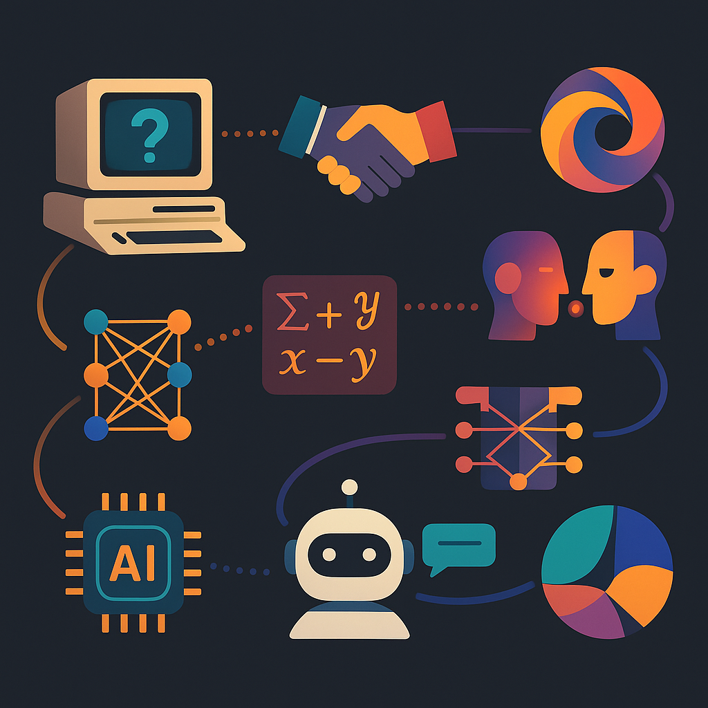

What is Generative AI?
Generative AI refers to models that can create new content — from text to images, audio, and even entire videos — by learning patterns from massive datasets. Unlike traditional rule-based systems, these models don’t just retrieve data; they generate entirely new outputs, mimicking human creativity.
What used to take a team of experts can now be prompted into existence with a single sentence.
A Brief History of Generative AI: From Math to Mind-blowing Creativity
Before ChatGPT could write poems or Midjourney could paint masterpieces, Generative AI was just a research curiosity — more theory than tool. Its journey is one of evolution, experimentation, and explosive breakthroughs.
Here’s how we got here:
1950s–1980s: The Foundational Ideas
-
1950: Alan Turing poses “Can machines think?” — kickstarting the AI debate.
-
1956: The term Artificial Intelligence is coined at the Dartmouth Conference.
-
Early AI was symbolic and rule-based. “Creativity” wasn’t even part of the conversation yet.
-
Generative ideas were mathematical — think Markov chains or Bayesian models — not artistic.
1980s–1990s: The Rise of Neural Networks
-
1986: Backpropagation algorithm is introduced — making training multi-layer neural networks practical.
-
Still, computers were too slow and data too scarce for anything beyond toy models.
-
AI remained mostly in labs, not in daily life.
2000s: Machine Learning Gets Serious
-
With more data and better compute (thanks to GPUs), machine learning grew rapidly.
-
AI could now “learn” from examples — but it still wasn’t generative.
It classified, sorted, predicted — but didn’t create.
2014: The Breakthrough Moment — GANs
-
Generative Adversarial Networks (GANs) were introduced by Ian Goodfellow.
-
GANs are a game between two networks — a generator and a discriminator.
The result? AI that could create new images, music, even faces from scratch. -
This was the first time machines generated realistic content — art, fashion, media took notice.
2017–2020: The Language Revolution
-
2017: Google releases Transformer architecture — the game-changer behind modern Gen AI.
-
Transformers can handle long-range context and parallelize training — perfect for language tasks.
-
2018–2020: OpenAI’s GPT-2 and GPT-3 are released. They can:
-
Write essays
-
Translate languages
-
Code, joke, argue
-
-
Suddenly, Gen AI wasn’t niche — it was everywhere.
2021–2023: OpenAI, Stability, and the Creative Explosion
-
DALL·E, CLIP, Codex: AI starts generating not just words, but images and code.
-
Midjourney, Stable Diffusion: Image generation tools go viral, democratizing creativity.
-
ChatGPT (Dec 2022): A user-friendly chatbot powered by GPT-3.5 (and later GPT-4) becomes a household name.
-
Suno, Runway, Pika: Audio and video generation catch up — AI is now multi-sensory.
2024 and Beyond: The Multimodal Era
-
Sora by OpenAI: Text-to-video with cinematic quality — blurring the line between prompt and production.
-
Multimodal models like GPT-4o combine text, image, audio, and video into a single model — like having an AI co-pilot who can read, see, hear, and speak.
-
Open-source models (Mistral, LLaMA, Falcon) empower developers globally

Why Is It Suddenly Everywhere?
A few key reasons:
-
Transformer architecture (like GPT, BERT) made it possible to model language context better than ever.
-
Open-source models and APIs like ChatGPT, Claude, and Stable Diffusion made powerful tools accessible to all.
-
Cloud computing and GPUs are cheaper and faster now, enabling real-time generation.
-
Most importantly, user interfaces have become intuitive — you don’t need to be a developer anymore to use AI creatively.
The result? A Cambrian explosion of content, tools, and ideas — many of them AI-generated.
Who Is Using It?
-
Students: writing essays, generating presentations
-
Marketers: creating content calendars, campaign slogans
-
Developers: writing boilerplate code, debugging
-
Designers: prototyping visuals, branding assets
-
Startups: building MVPs using AI-generated UX and code
-
Entertainers: auto-tuning vocals, creating AI-generated music videos
It’s not limited to tech-savvy folks anymore. From kindergarten teachers using AI to draft lesson plans to indie musicians collaborating with voice clones — Gen AI is mainstream.
What Most People Are Missing About Gen AI
Despite its popularity, there are five truths people often overlook:
-
Generative AI doesn’t understand — it predicts.
It generates the most statistically probable next word, pixel, or sound — not necessarily the most meaningful or correct one. -
Bias is baked in.
AI reflects the data it was trained on. That includes human stereotypes, misinformation, and cultural biases — amplified at scale. -
It can hallucinate facts.
Especially in text and code, Gen AI can generate responses that sound plausible but are totally wrong. -
It’s not always legal.
Many models are trained on copyrighted or proprietary data. This opens up grey areas in IP law, especially in art, code, and music. -
It’s energy-hungry.
Training large models consumes immense computational power and energy — raising sustainability concerns rarely discussed in AI hype.
What Is Gen AI Used For? (Real Tools, Real Tasks)
1. Image Generation
-
Midjourney
Text-to-image generation with surreal, stylized art quality. -
DALL·E 3 by OpenAI
Highly detailed and accurate images, now integrated with ChatGPT. -
Stable Diffusion
Open-source, customizable image model for everything from photorealism to abstract art. -
Ideogram
Best known for generating images with realistic-looking text (posters, signs, branding).
2. Presentation (PPT) Generation
-
Gamma.app
Turn ideas or prompts into full decks with engaging visuals. -
Tome
Create storytelling-style presentations with text, images, and web content. -
Beautiful.ai
Smart templates that adapt to your content automatically — professional and clean.
3. Code Generation
-
GitHub Copilot
Autocompletes code in real time, trained on millions of public repos. -
Replit Ghostwriter
Built into an online IDE — great for learning, prototyping, and real-time feedback. -
Amazon CodeWhisperer
AWS-native coding assistant with a focus on security and enterprise integration.
4. Song & Audio Generation
-
Suno.ai
Compose entire songs from text prompts — vocals and all. -
Udio
Realistic singing voice generation with lyrical coherence. -
Jukebox by OpenAI
Neural net for generating music with vocals in various styles (research-level). -
Voicemod AI
Real-time voice filters, character voices, and song effects — fun and viral.
5. Idea Generation & Brainstorming
-
ChatGPT
Your go-to tool for ideation, writing help, and planning anything. -
Notion AI
Embed brainstorming, writing, and organizing inside your workspace. -
Jasper
Tailored for marketers and copywriters — blog posts, ads, and taglines. -
Perplexity AI
Real-time AI search with citations — great for research and content drafting.
6. Video Generation
-
Pika Labs
Generate short animated videos directly from prompts. -
Runway ML
Popular for AI-powered video editing, green screen effects, and motion tracking. -
Sora by OpenAI (early access)
Text-to-video model that generates cinematic clips with astonishing detail.
The Future of Generative AI: What’s Coming Next?
Generative AI is no longer a novelty — it’s a foundational technology. As it evolves, we’re entering a new phase where Gen AI isn't just a content creator but a collaborator, decision-maker, and creative partner.
Here’s what the next 3–5 years are likely to bring:
1. Multi modal Models Become the Norm
Gen AI is moving from “text-only” to models that see, speak, hear, and act.
-
OpenAI’s GPT-4o integrates text, vision, and voice — hinting at more real-time, emotionally aware AI companions.
📎 Source: OpenAI GPT-4o launch -
Google Gemini, Meta’s LLaMA 3, and Anthropic’s Claude 3 are also integrating multimodal capabilities.
2. Autonomous AI Agents and “AI Co-workers”
Instead of prompting every task, users will rely on AI agents that take initiative and complete complex workflows.
-
AutoGPT, BabyAGI, and Devin (by Cognition AI) show early prototypes of AI that:
-
Plan tasks
-
Search online
-
Write and run code
-
Adapt to feedback
-
📎 Source: Cognition AI Devin | AutoGPT GitHub
3. AI in Scientific Discovery & Healthcare
Gen AI will play a growing role in drug discovery, clinical documentation, and diagnostics.
-
AlphaFold (DeepMind) has revolutionized protein structure prediction.
-
Google Med-PaLM 2 and OpenAI's BioGPT are built for medical reasoning and summarization.
📎 Source: Nature: AlphaFold success
4. Text-to-Video Will Reshape Creative Industries
Tools like Sora (OpenAI) and Runway ML Gen-3 will allow you to generate cinematic videos from text — no camera needed.
-
Hollywood, advertising, and indie creators will co-create with AI rather than outsource or hire.
-
AI actors, AI voiceovers, and fully synthetic films will raise new legal and ethical challenges.
📎 Source: OpenAI Sora | Runway ML Gen-3
5. AI Governance, Regulation, and Ethics Will Intensify
-
Expect national and international policies on AI watermarking, copyright, misinformation, and safety.
-
The EU AI Act, Biden’s AI Executive Order, and the UK AI Safety Summit are early steps toward global regulation.
📎 Source: EU AI Act Summary
6. AI Will Shift Job Roles — But Not Always Replace Them
-
McKinsey predicts up to 30% of work hours could be automated by 2030, especially in knowledge and creative industries.
-
The key is not replacement, but job transformation — humans will need to upskill in prompt engineering, AI ethics, and system design.
📎 Source: McKinsey Future of Work Report
7. The Rise of Emotionally Aware and “Self-Reflective” AI
-
Emerging research is focused on AI theory of mind, emotional intelligence, and social reasoning.
-
Models like Claude 3 Opus claim early steps in understanding human intentions and feelings — enabling more sensitive interaction.
📎 Source: Anthropic Claude 3
Final Thoughts: The Real Work Starts After Generation
Generative AI is a spark, not a solution. It can accelerate creativity, but human judgment, editing, and purpose remain irreplaceable.
If you’re using Gen AI without asking why, how, and what’s missing, you’re just automating the obvious.
But if you’re using it to challenge how we think, create, and collaborate — then you’re tapping into something revolutionary.
Generative AI won’t replace your job — but someone who knows how to prompt it well just might.